The 1889 tower, from Eiffel's plates
The eiffel demo builds the tower as it stood in 1889. Its large structure is Eiffel's own: every panel node sits where Plate XXXI of his 1900 album puts it. Everything below the panel scale — lattice struts, gusset plates, rivets — is placed by rule. The parts the album draws whole are built from their own figures: the uprights' sections, the stairs, the lifts, the ground, and the rooms of the first floor and the summit. This guide covers the sources, the rules, how the model was audited against the plates, and what it costs to cook.
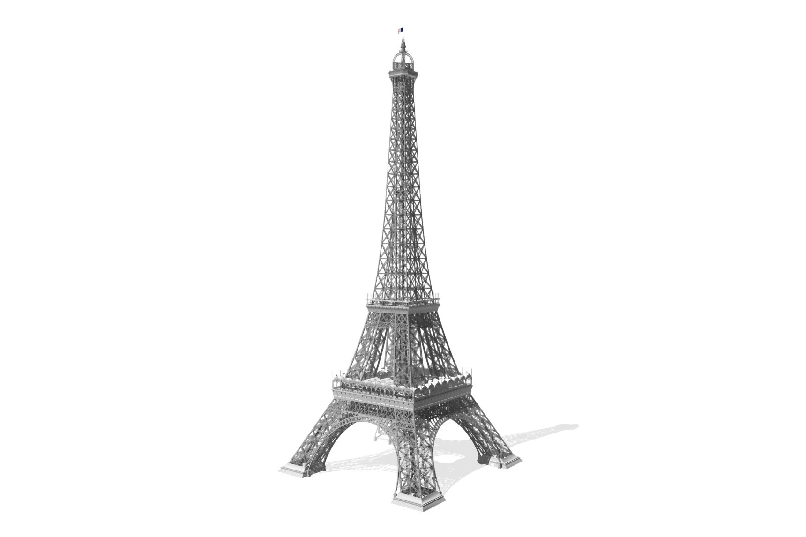
Scope
Plates for the large structure, rules for everything smaller.
The tower's geometry divides at the panel. Above that scale the demo copies numbers: the node table of Plate XXXI, the floor levels of Plate I, the arch radii of Plates VII and XI, and the member sections printed in Plate XXXI's tables.
Below it, the demo states rules and applies them to every member the table implies. The rules say which bracing pattern a panel carries, how a web member is laced, where a strut stops short of the upright it meets, and where a rivet goes. The web members are not traced from a drawing.
Some parts are placed from figures of their own. The list grew with the model:
- the summit's diagonal girders and its rooms;
- the leg entretoises and one plan girder;
- the uprights, plate by plate from Plate XXXI's sections, and their splices;
- the arches' ironwork;
- the plinths, supports and foundations;
- the lift cabins and the stairs;
- the erection's timber pylons and scaffolds.
Each depth is a different graph, not a different view of one.
- Skeleton draws every web member as a solid bar of its outer section, and the built-up uprights as their web plates alone. The plan bracing's lattice girders are the exception: they are open chords with a Warren web at every depth.
- Laced replaces each of those solid bars with four corner angles and their lacing. In the legs and the shaft, each is also trimmed at its joints and given gusset plates. Laced also adds three more things: what stands out of the uprights' webs (the cover strips over their butts, and in panels 1–5 the fins and channels), the arches' volutes and macarons, and the plates where two bars cross.
- Rivets adds the rivets as instances.
Lacing and rivets are each set to off, streamed or full. Full cooks the depth once, for the whole tower. Streamed cooks it a cell at a time round the camera (see Detail).
Two more graphs sit beside these. ?rivets=full is the rivets depth cooked full, plus the rows along the built-up uprights as Plate IX draws them (panels 6–11's taken as in panels 1–5 [estimated]); those rows have no streamed form. ?build is the erection (see Erection).
The host page supplies materials, a light rig, a ground plane and unit assets for the instances: the rivet head, and the cabochon, gas globe, baluster and Roux chain pieces that the fittings and the chains resolve against. It generates no other geometry and repairs none.
It does act on what the graph hands it, at load or over time. It applies each rivet head's hand-drive, moves the lift cars, their machinery and their chains every frame, runs the flag as a cloth, reveals the erection day by day, and clips the tower in section (see Rendering).
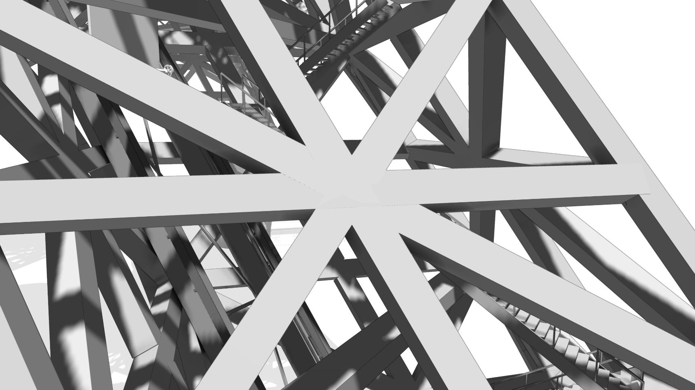
skeleton
laced
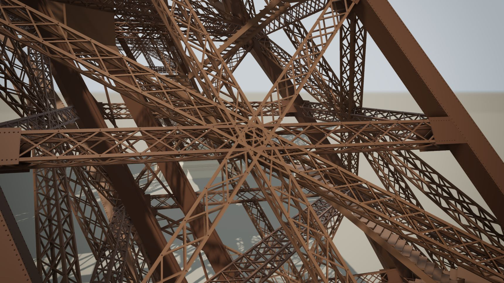
rivets
One camera pose at the three depths: panel 2 of a leg, on its lit face. The rivet heads in the third frame are about 19 mm in radius, the nominal head (each is driven a little differently; see Rivets), and resolve only at full size.
Provenance
The primary source is Eiffel's 1900 plate album.
G. Eiffel, La Tour de trois cents mètres (Lemercier, 1900), is on Gallica as full-resolution scans, each plate in two halves of about 6000 × 8800 px.
Every number read from a source is recorded in demos/eiffel/SOURCES.md with its
source key and one of four tags:
- sourced: printed on a drawing or stated by a source.
- derived: computed from sourced numbers, with the arithmetic shown.
- estimated: read off a drawing by eye, or a printed digit that is ambiguous.
- measured: a pixel reading calibrated on a printed dimension. This tag is used from §10 of SOURCES.md on.
Where sources disagree, every value is listed. The constants the demo sets itself are marked [estimated] in the code: the 50 mm joint clearance, the gusset reach, the 100 mm joint pitch and the 19 mm rivet head.
| Plate | Content | What the demo takes from it | Cited |
|---|---|---|---|
| XXXI | Elevation diagram at 1:1000, panel weights, member sections | The node table: height, outer and inner half-width of all 29 panels. Upright counts and member sections; the uprights' built-up sections, plate by plate. | 68 |
| I | General elevation at 1:1000 with levels | Floor and terrace levels, the datum, the ground dimension chain, platform sides. The reference for the silhouette audits. | 84 |
| II–VI | Foundations, masonry, the machine room, supports | The massifs and caissons, the plinths' dress, the stone seats, cast shoes and anchor bolts, the machine room under pile 3. | 66 |
| VII | Panels 1–29 drawn in their own inclined face planes at 1:200 | In-plane closure checks, arch radii, belts, base ties, panel 29, the summit. | 193 |
| VIII, IX | Plan bracing; detail sheets at 1:100 and 1:50 | Plan bracing pattern and depth; strut, lacing and gusset details; the uprights' splices and seams. | 37 |
| X, XII | Detail sheets: base ties, belts, joints, lacing | The splice at the bend into panel 5, the lacing's crossing rivets, the rivets on the belts' and ties' chord flats. | 22 |
| XI | Decorative arches, arch girders, first-floor girders | The grande poutre, the arch's lower radius, the arcade's montants, the arches' cast ironwork. | 45 |
| XIII–XXX | Galleries, floors, fit-out, pavilions, lifts, stairs, names, erection | The 1889 first floor, the upper floors, the summit, the lifts and stairs, the 72 names (XIX), the erection's cranes and temporary works (XXIV, XXV). | 505 |
The conflict rules are applied the same way throughout:
- A plate beats a rounded official figure (57.63 m over the official 57 m).
- A plate at a larger scale beats one at a smaller scale.
- A printed number beats a pixel height.
- A height is read on its plate's own vertical scale, never the horizontal one. Near its foot, Plate I is drawn at 15.27 px/m vertically against 16.14 px/m across (above the first floor, about 16.1 px/m). A reading of Plate XI taken with its horizontal scale put the arch foot 0.5 m low.
- Where the album shows a post-1889 state, the 1889 state is taken from the text volume or from a figure titled for the 1889 Exposition.
A later reading does not overwrite an earlier one. The later section of SOURCES.md names what it supersedes, so a value is quoted from the last section that gives it.
Secondary sources are cross-checks, not inputs. C. Chouard's 2001 transcription of Eiffel's documents agrees with the plate's full widths, compared at two decimals, at 26 of 28 nodes. It differs at two: at IX it gives 16.47 against the plate's 16.46244, and at XXII 55.293 against 55.300, the value the plate's 27.10 and 14.10 give [derived].
A 2020 thesis that modelled the tower from the same drawings is cited where it is right and flagged where it is not. It reads the 36.00 m datum as 36 m of masonry, and gives panel 5 the slope of panels 1–4.
The large structure
Every upright is straight within a panel and turns only at a plate node.
Plate XXXI prints, for each panel, its height and its full widths at its bottom node. Which widths it prints depends on the height:
- Below the second floor: the inner width and the leg's side.
- From there to the merge at XI: all three, the outer and inner widths and the leg's side.
- Above XI: one total width.
The model halves these into half-widths (defined below). The nodes are named by the plate's own Roman numerals, counting down from XXVIII at the bottom of panel 1 to I at the bottom of panel 28.
spec.ts carries the table as 30 rows: the supports (panel 1's line extended to
the support centres), the 28 nodes XXVIII to I, and the top of panel 28. Nothing between two
rows is stored. A height between nodes is linear interpolation, which is exact because the
uprights are straight. The curve of the tower's profile is a 29-sided polyline.
NODES in
demos/eiffel/spec.ts (Plate XXXI): outer silhouette in white, inner in grey, a
horizontal at every node. Bracing is drawn as one X per panel; the real per-panel patterns are
in The lattice. Floor decks at their Plate I sides. To scale, 2 units per
metre.Heights use two datums:
- y is height above the ground at the tower's centre, the datum of the official floor heights.
- h is height above the support centres, the datum Plate XXXI is drawn on.
The two differ by a constant: y = h + 2.50. A half-width is the horizontal distance from the tower's axis to a member's axis, measured perpendicular to a face, as a face-on elevation shows it.
spec.ts carries the compass as data (PILES, FACES). Each lower upright is the text volume's 0.877 m square in plan [sourced, text], from which Plate XXXI's web widths follow. Its faces lie in the tower's face planes (see Uprights). The half-widths here, halved from the plate's full widths and measured from the tower axis square to a face, are 41.2435 inner and 56.2435 outer, the outer width at XXVIII being the inner + 30 [derived]. The distance to c along the diagonal, 79.5403, is not a half-width. spec.ts (Plate XXXI), legs.ts, lattice.ts.The table closes. Summing Plate XXXI's printed panel heights from the supports gives the top of panel 29 at h = 273.63038 m; the plate prints the third floor at 273.63 m. The residual is 0.38 mm over 273.6 m. The structural nodes XXIII and XVII sit 0.23 m below the first and second floors, which the chain also reproduces exactly.
The node table and the floor levels are byte-identical in the first commit and the latest. spec.ts grew from 207 lines to 1,422 between them — the audit rounds, then the uprights as built, their splices and the plinths — and no node moved.
Architecture
TypeScript computes the plate data. The graph does the repeating, with library nodes only.
Eight modules build the tower: legs, shaft, first floor, summit, platforms, lifts, the flag
and the ground. Under ?build, the erection's works and cranes join them. Each module
runs at graph-build time. It reads spec.ts and computes what its parts need in
TypeScript: station positions, masks, face normals, end angles, outlines. It then embeds the
results in standard PCG-TS nodes. Each table becomes the literal rows of one
pointList. What a point list cannot hold, per-primitive columns and masks,
becomes field parameters.
Some outline work is the graph's too. A floor's deck is its outline less its wells, cut by
polygonBoolean, and so is a summit slab with a well in it.
The TypeScript also draws the pieces that occur once, or differ each time they occur. What repeats, it draws once, and the graph copies it:
- a platform's fit-out, in the frame of one face, copied onto its faces;
- a bay, copied onto the bay stations;
- the boxes: one extruded unit box, copied onto a point per block;
- the ground's supports and massifs, and the lifts' machinery and wheels: one template each, copied onto their seats.
The copies are graph nodes, not vertex tables. The graph uses 22 node types at the skeleton
depth, 24 laced and 27 with rivets, none of them custom, so it serializes to JSON. A test
(tests/eiffelSkeleton.test.ts) asserts that the skeleton graph's round trip cooks
to byte-identical positions.
spec.ts holds the tables read off the plates. Eight rule modules and their helpers compute stations, masks, faceN and end sines in TypeScript and embed them in standard library nodes, the tables as pointList rows and the rest as field parameters; what repeats they draw once and copy in the graph. The graph serializes to JSON and cooks the skeleton depth back to byte-identical positions (tests/eiffelSkeleton.test.ts). At a whole depth the page cooks the graph once on the CPU; a streamed depth is cooked a cell at a time in a worker (see Detail). The page draws one mesh per class output, and one mesh per rivet batch, each head packed and rebuilt in the vertex shader. The depth reaches the modules as a Detail flag. Platforms, the flag and the ground do not take it, and the lifts take it and discard it. webMembers applies it to the web members. The legs and the shaft also use it to choose what stands out of the uprights and which crossings get plates, and the first floor uses it to add the arches' ironwork. The columns name a selection of the graph's 27 node types and of its 17 part classes. Not to scale.Point lists and ramps
A table the TypeScript computes enters the graph through one helper, pointTable,
as a single pointList node: a point per row, a column per attribute, the values
written out.
Each column used to be a field instead, ramp(index(), stops) through
indexTable, on a grid of points. Moving the tables to point lists took the skeleton
graph from 2,363 nodes to 1,662 and its ramp stops from 161,856 to 16,073 (6e77795e). Those are
the counts at that commit; the table below, recounted since, gives the skeleton 1,704 nodes.
indexTable remains for what a point list cannot carry: primitive-domain
columns such as faceN and the end sines, the edge rules' masks, and the chains'
spawn.
The ramps that remain are compressed where they can be. A run collapses to its two ends whenever the ramp, interpolating between them, stores every entry of the run bit for bit. That holds for a run of equal values, and for a straight flight's treads, which are affine in the tread index. The largest ramp left has 344 stops at the skeleton depth and 3,432 laced.
The library's ramp was not always exact at a stop. An input landing exactly on an interior stop was answered as v0 + (v1 − v0)·1, which can round off the stop's own value. The byte-identity test that moved the tables to point lists found it, and the ramp now returns the stop's value there (fd41338d).
A ramp of more than 16 stops finds each point's segment by bisection, so a table with a stop per point costs n log n, not n². It used to scan its stops from the first. That is why the platforms module once cooked its prism lists in runs of at most 1,024 points: splitting took its cook from 0.80 s to 0.31 s then. The runs are gone with the lists they split. The platforms' boxes are copies of one unit box, and the few prism lists left are one table each.
Outputs and cost
Each module returns meshes grouped by part class, and the graph declares one
output per class. The page also gets an output for each piece it moves or instances; under
?build, one for each of the erection's works; and, at
the rivets depth, one for each rivet set, which is its own spawn:
| Outputs | Count | What they are | Depths |
|---|---|---|---|
| Part classes | 17 | uprights, bracing, horizontals, girders, arches, platforms, deckUndersides (the 1st and 2nd floors' bottom faces, split out of the platforms' decks), stairs, masonry, foundations, summit, gussets, names, machinery, groundIron, glass and silvered | every depth; gussets laced and rivets only |
| Moved or instanced | 51 | the lifts' cars, cabin glass, cables, pulleys, wheels, pistons, carriages and trucks (43), their four chains, three batches of fittings and the flag | every depth |
works.* | 10 | the erection's temporary works | ?build only |
| Rivet sets | 58 | 1,205,292 heads in all; at ?rivets=full, 59 sets and 1,326,388 heads | rivets, ?rivets=full |
So the skeleton has 67 outputs (no gussets), laced 68, rivets 126 and ?rivets=full 127, as the next table shows.
| Depth | Graph nodes | Outputs | Mesh triangles | Instances | Cook | Graph JSON |
|---|---|---|---|---|---|---|
| skeleton | 1,704 | 67 | 765,424 | 2,648 | 922 ms | 4.0 MB |
| laced | 2,045 | 68 | 3,948,224 | 2,648 | 2.87 s | 6.1 MB |
| rivets | 3,427 | 126 | 3,948,224 | 1,207,940 | 6.16 s | 10.4 MB |
| rivets=full | 3,448 | 127 | 3,948,224 | 1,329,036 | — | 10.7 MB |
The columns come from two dates. Graph nodes, Outputs and Instances were
recounted on 2026-10-18 from the page's depth queries, after deckUndersides became a
class of its own (71193103). Mesh triangles, Cook and Graph JSON are from the measurement of
2026-10-02 (109f23f9).
- Instances match
tests/eiffel.golden.jsonand count every batch. The 2,648 at every depth are the fittings and the lift chains. - Mesh triangles are the cooked geometry alone. The instances draw their assets' triangles on top: 580,800 for the fittings and chains at every depth, and 80 for each rivet head. The page's total is 1,346,224 for the skeleton, 4,529,024 laced, 101,179,584 at rivets and 110,809,024 at ?rivets=full.
- Cook: the measurement ran on an Intel i9-13900KF under Node 22.20, headless: a CPU cook of a freshly built graph through the page's own depth queries, median of seven after a warmup, the depths interleaved, the process pinned to the performance cores. The column is the median of three such processes. On the efficiency cores the same cooks took 1.7 to 1.8 times as long when last compared. ?rivets=full was not timed under this protocol; one cold, unpinned cook took 12.4 s.
- Graph JSON is the compact serialized form, MB = 10⁶ bytes.
The machine was shared and busier than at the previous measurement: other
processes held a median of 3.6 to 11.4 logical CPUs. Three control processes cooking the graph
of the previous measurement (f2d5bc8) ran alternately in the same session. They came out within
a few percent of these, so the cook time has not moved beyond noise. The node count and the
JSON fell by about a third, the node count mostly from the move to point lists. The cooked
outputs at all four depths hash identically to the committed golden file,
tests/eiffel.golden.json.
tests/eiffel.golden.json) records them at 71193103. Lacing
multiplies the classes that hold web members: girders 85,896 to 1,331,784, bracing 11,792 to
1,101,504, horizontals 4,920 to 419,136. It adds the gusset plates (64,440). It also changes
two classes without web members: the uprights, 16,880 to 190,736, as their cover strips, fins
and channels appear, and the arches, 112,704 to 307,392, with their volutes and macarons. The
other eleven classes do not change with depth: platforms (223,761), stairs (90,984), names
(53,532), masonry and silvered (28,352 each), summit (20,970), machinery (17,280), groundIron
(14,968), glass (14,880), foundations (9,644) and deckUndersides (245). The deckUndersides
class holds the decks' bottom faces, split out of platforms (53f551f0); the two sum to the
platforms' old 224,006. The rivets depth adds no triangles. Its 1,205,292 heads are instances
of one 80-triangle head, which the page packs in 24 bytes and rebuilds in the vertex shader
(64 bytes a matrix on the fallback path).Rules
Regions differ by which rules apply, not by how they are built.
Each region is a lattice of stations: a ring of positions repeated at every
level, with station (s, k) stored as point k·R + s.
A leg's ring is its four corner uprights, in the order c, b, a, d; the shaft above node XI has eight,
the four corners and the four face centres. A web member is an edge rule: one
connectByIndex node joining each station to the station ds
along the ring and dk levels up, masked by a table that says where the
rule applies.
edges(lat, id, ds, dk, keep), whose connectByIndex target is (k + dk)·R + ((s + ds) mod R), or −1 where the mask drops the station. Horizontals, CrossA and CrossB differ in ds, dk and their masks; the span is 2 in panels 1–4, 1 in panels 6–9 and 12–17, and 0 elsewhere.Where one station grid describes a region, its parts differ only by which masks are set. The bracing, region by region:
| Where | Bracing |
|---|---|
| Panels 1–4 | Two diagonals per face that run node to node and cross on a mid-panel horizontal. A laced central post runs through the crossing, parallel to the uprights. |
| Panel 5 | A lattice belt. |
| Panels 6–9 | One cross per face, with a laced central post through the crossing as in panels 1–4. |
| Panel 10 | Two X's per face, either side of a post, over a band of flats. |
| Panel 11 | A lattice belt. |
| Panels 12–17 | One X per panel. Above node XVII the inner upright a has ended, and in panels 12–16 a gap X between adjacent legs braces b of one leg to d of the next. |
| Above XI | The four legs are one shaft, and every face is two X-braced bays. |
| Nodes from XVI up | Every node except IX carries a horizontal truss across the tower, its pattern chosen by the node's name. |
Panel 10, the central posts, the gap X's and the base ties have station grids of their own. The belts, the Masque screen, panel 10's band and the entretoises are explicit member lists.
A central post lands on its horizontals rather than stopping clear of them. Its end is placed where its far corner clears the horizontal, so the near corner buries in the member (6687913e).
The upright lattice adds a vertex 0.01 m either side of every node where the slope changes, except XVII, where the upright is split instead. The kinked nodes are computed from the table, not listed. The extra vertices date from when an upright was a square section swept along its chain. A sweep puts one ring per vertex in the bisecting plane, and the extra vertices kept the skin between two kinks from twisting. The leg and shaft uprights are no longer swept. Their chains are the axes the built-up plates are set from, and the extra vertices stay because tests read them.
Members
The uprights are built plate by plate, as Plate XXXI's sections make them.
A leg's four uprights, the arbalétriers, are box columns riveted up from plates and
angles. Plate XXXI's tables print the makeup of each one, panel by panel, and the model builds
them from those tables (builtup.ts, UPRIGHT_SECTIONS and
UPPER_SECTIONS in spec.ts).
Below XVII the box is a constant 0.877 m square in plan. Its faces lie in the tower's face planes, and its plates grow inward as they thicken [sourced, text]. Cut square to the leaning axis, that section is a lozenge, not a square: 101° 38′ in panels 1–4, the angle Plate IX fig. 28 prints, which the node table reproduces as 101.64° [derived]. No square section swept along the axis can take that shape. So each panel's upright is four web plates, each a flat box in its own face, straight within the panel. The swept skin this replaced was 0.82 m square below the first floor and rolled 11.6° off the x-facing faces.
The built plates check against Plate XXXI. Their widths come within 2 mm of every web width it prints from XXVIII to XIX: 800 in panels 1–4, 822 in 5, 832 to 866 in 6–10 [derived]. Panel 11's widths miss by up to 7 mm, because the plate prints XIX's for XVIII. Rebuilt from their parts, the plate's member areas and its Ω (the four arbalétriers' total per panel) close exactly, except at XX b, where the plate's own arithmetic is 2 mm² out.
At the turns
Where the column turns, at XXIV to XVIII, the two panels' faces meet on the node's horizontal line. That line crosses a plate's square end at up to 24°, and a box cannot mitre on it. So each plate ends where its centre line crosses the node's horizontal plane, and runs on a little to close the sliver.
Measured on the cooked plates, no point of the true faces round a turn is left uncovered. At worst a plate stands 21 mm proud of the face or 14 mm short of it. A notch under 10 mm wide stays open at the corners just above each turn, deepest at XXIV and XXIII, up to 7.3 mm. The thickness steps at the node, inside the box, where it cannot be seen.
What stands out of the box
The skeleton depth draws the webs alone. From the laced depth up, what stands out of them is drawn too, so the envelope anything else is fitted to is the same at every depth. Nothing inside the box is drawn. Below XVII three things stand out:
- On every face, a cover strip, the C.J., over the butt of the two half plates (205 × 12 or 200 × 12 in panels 1–5).
- On the exterior faces of panels 1–5, two angles back to back on it, their outstanding legs a fin 24 mm thick standing 100 mm proud [sourced, Plate IX figs. 23–24].
- On the interior faces of panels 1–5, a channel of two angles, heels 385 mm apart, the seat of the montants' gussets [sourced, Plate IX fig. 21].
Above XVII the legs' b, c and d and the shaft are 0.50 m boxes, the 500 taken as a plan square [derived]. At the merge at XI the axes of b and d of neighbouring legs stand 0.50 m apart, so the boxes touch. From panel 18 up, b and d are one T, 1,000 wide in panel 18 and 500 × 500 from panel 19 [sourced]. The shaft's corner c is a closed box through panel 18 and an open L in panels 19–28, closed by 8 mm plates 1.05 m either side of each node [estimated, measured off the joint plates] (6cc56d70, 247084e0).
Where the webs land
A web member's joint meets that box. Below XVII its r in the joint rule is the
box's in-plane half-width plus what stands out of the face it lands on: the channel in panels 1–5,
the C.J. in 6–11. Its gusset plates stand 8 mm off the webs they lap (see
Joints). Where the first floor lands on the uprights is in
Regions.
Splices
A column was erected in tronçons and spliced under cover plates. Where the joints fall depends on the panel:
| Panels | Joints at | Source |
|---|---|---|
| 1–4 | L/6, L/2 and 5L/6: three tronçons of « 4,50 m », thirds of a length « en nombre rond de 13,50 m » | [sourced, text p. 75] |
| 5 | Both its bends, and the 4.01335 m that Plate X fig. 19 prints | [sourced] |
| 6–11 | As in panels 1–4 | [derived] |
| above XVII | round(L/6); the 6 m is the middle of the text's « 5 à 7 mètres » | [rule]; the 6 m [estimated] |
Every ply of a joint ends in the one plane the text names, « même plan normal » [sourced]. The exception is panel 5's bends, which Plate X fig. 19 draws level: there the plies end on the node's horizontal plane.
The covers on panels 1–5 are Plate IX's, at their printed sizes: a 290 × 15 web cover on an
exterior face and a 380 × 12 centre cover on an interior one. Panels 6–11 take Plate X's, with
lengths taken as panels 1–4's [estimated]. Above XVII there is one 12 mm cover over each outer
plate [estimated] (SPLICE, a58ec0e9).
Their rivet fields are measured on Plate IX: every 0.076 m in staggered columns on a web cover (fig. 23), every 0.064 m in a grid on an interior one (fig. 21) [measured]. They add 271,144 heads at the rivets depth, 22.5% of the total. Commit a58ec0e9 records what it left: 98 splice heads within a head's width of the first floor's rows, and 1,104 covers 1–10 mm into joint plates (up to 41 mm for the fin angles' covers).
Members
Every web member's section is squared to the face it leans in.
Every edge rule also writes the unit normal of the lattice face its member lies in, as a
primitive attribute faceN. It is the cross product of the ring segment and the line
joining that segment's midpoints on the two levels, which is exact for the trapezoid faces of a
tapering section. A member's section axes follow from it, as N = normalize(F −
T(F·T)) and B = N × T, so its section sits flat in its face. With
the default +y up hint the section would be squared to the vertical
instead. In panel 1, where the faces lean 26.7°, that rolls one diagonal's section 30.4° off the
face its rivets sit on, and the other diagonal's 39.5°.
One detail makes this work in a graph. Edge-rule members share their end points, and a sweep
resolves its up hint per point, so a shared point cannot carry two faces' normals. Each member is
therefore first resampled onto two points of its own with pathResample, which carries
the member's primitive faceN down onto them. The few uprights that are still swept,
panel 29's and the summit girders', take a constant +x hint instead, which keeps a near-vertical
member square to the tower's faces. The leg and shaft uprights are built from plates (see
Uprights).
Members
A laced strut is four corner angles and two zigzags per face.
At the laced depth a web member's path becomes four chord paths, offset to the corners of its
section, and eight lacing paths: two per face, in opposite phase, which puts one X in every lacing
bay. The chords are swept as 90 mm squares and the lacing as 45 mm squares, both squared to
faceN. The member types are the plates'. In the web the "800" strut runs to 100.6 m,
the "600" to 110.6 m and the "500" above; the horizontals are 800 to 115.5 m and 600 above.
CHORD 0.045), 0.045 m lacing bars between chord axes, and 8 rivet heads on the chords' outer faces at every lacing sample, with one more at each crossing of a face's two zigzags. (b) An upright's seam rows: 0.055 m in from its corners, a head every 0.125 m, laid on the built-up box's true faces (see Uprights). (c) The nominal unit head the page supplies, which the graph's instances scale by 0.019: a spherical cap of base radius 1 and rise 0.7, 80 triangles. strut.ts, spec.ts MEMBERS, main.ts rivetHead.LACING_STEP stop, and at the rule used without a table (step = chord-to-chord width, 45°). Sample count checked against a cook of buildLegs.In the legs and the shaft the lacing step is set per member, by the member's own outer width: 1.00 m for the 800, 0.94 m for the 600 (measured on the shaft's horizontals), 0.68 m for the 500. The first-floor and summit webs and the first floor's entretoises lace at 45°, and the legs' entretoises at 0.79 m. Where the plates show a different step in a particular panel, a height band overrides it — the legs' 500s in panels 12–17 run at steps from 0.69 to 1.01 m, each read from Plate VII. The step is a field evaluated once per member on the primitive domain, from the member's mean height.
Members
A strut stops where its joint starts. The gusset plates cover the rest.
A web member run from upright axis to upright axis puts its lacing inside the upright's box. The first version did exactly that, with up to 15% of the shaft's lacing inside an upright. So each member end that meets an upright is trimmed to its joint start: the distance along the member at which its section clears the upright by 50 mm. A point a along the member and w off its axis lies a·sin t − w·cos t from the upright's axis, where t is the angle between member and column, which gives
jointStart = (r + 0.05 + w·cos t) / sin t
with r the upright's half-width at that height and w the member's in-plane half-width. Below XVII, r is the built-up box's greatest in-plane half-width plus whatever stands out of the face the member lands on: the channel in panels 1–5 or the C.J. in 6–11 (0.5021 m at XXVIII). Above XVII it is the 0.50 m box's 0.25.
The edge rule records the angle per member end, as the sine against the column's bisector at the station. At a kinked node it uses the smallest of the sines against the bisector and the segments below and above, because at XXIII the bisector would place a horizontal's bottom chord 20 mm farther from the upright than it is.
CLEAR 0.05 m; the pair of 8 mm gusset plates, 0.96 m wide, runs from about 0.011 m to 2.073 m, with joint rivets every 0.1 m from 1.6 to 2.0, four heads per sample, 20 an end. Below, in red, the same strut untrimmed, as the code ran before 610092b (drawn with today's lacing step). Its first bay of lacing, the chord ends and the rivets at the first two samples lie inside the upright's box. Values checked against a cook of buildLegs.Each end then receives a pair of gusset plates, one either side of the member's face plane,
from the upright's face to jointStart + reach. The plates of the members
meeting at a node overlap to form the node's gusset. No rule needs to know which members meet
there, because each member places its own plates. Below XVII the plates meet the built-up uprights
through a table of their own, jointFace, and stand 8 mm off the webs they lap.
While the joints were built (b0d0f01), an independent check found 496 joint rivets (1.7%) up to 127 mm inside an upright: the clearance had been a fixed distance along the member. Solved from the meeting angle, as above, it left none inside, with a minimum clearance of 173 mm.
The second kind of plate is over a crossing. Wherever two laced struts cross in a lattice face, the tower rivets a plate over them, one either side. That happens where a panel's two diagonals bisect each other, where a post lands on a horizontal, or both at once. The sources name two. Plate VII fig. 2 draws the plate at the gap X's centre, and Plate XIV fig. 5 bis the « 2 Goussets 1.130 × 10 » where the summit's diagonal girders cross [sourced].
The model treats every crossing in a lattice face as the same joint [rule] and builds them all
in one place, crossing.ts: 444 crossings and 888 plates in the legs and the shaft,
and 240 crossings and 480 plates on the first floor (641c6174, 7fa7b878, 37f318ed).
A plate is 10 mm thick and lies in the members' shared face plane. It sits under the corner angles' outer face, so the angles run over its edges while it covers the lacing between them. How far under, and how wide across an 800, are set by eye rather than read off a plate [estimated]. They are the two values the page lets a URL override (?plateSet, ?plateEdge). No lacing rivet is placed under a plate or on its rows (63de7af1).
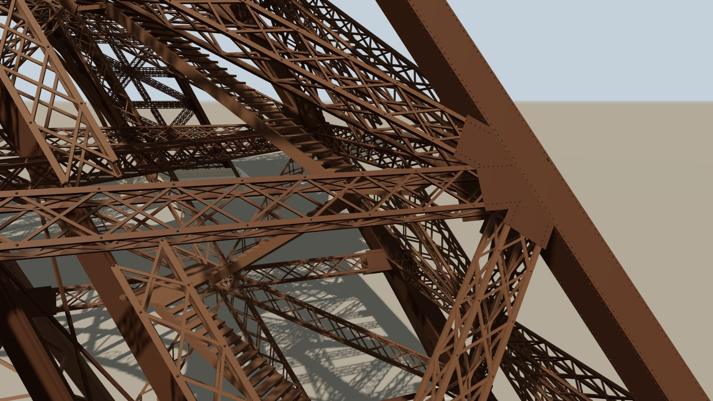
Members
Rules place the rivets, each emits an instance batch, and every head is driven by hand.
Three rules place most of the rivets: 878,108 of the 1,205,292 heads at the rivets depth, 72.9%.
- Lacing rivets are where a lacing bar meets a chord: eight per strut section at every lacing sample, on the chords' outer faces, and one at every crossing of a face's two zigzags. Plate X figs. 12–13 draw those crossing rivets on the 800s of panels 6–9; riveting every laced strut's crossings that way is inferred from them (d01814e1).
- Seam rivets fasten a box member's corner angle to the plates it joins. On an upright they run in rows 55 mm in from each corner, every 125 mm, laid on the built-up box's true faces and centred on the stretches between nodes, plate ends and splice covers. The first floor's chords and posts carry the same rule.
- Joint rivets fasten a strut's two chords to each gusset plate, every 100 mm over the plate's reach, and never nearer the upright than the joint start.
No lacing head is placed under a joint or crossing plate, nor on its rows. No source prints a seam pitch; 125 mm is measured on Plate IX's gusset detail. Where a pitch is printed or measurable elsewhere, that figure's own is used: the splice covers' fields, and the spacings Plate X prints along the base ties' bars.
| Rule | Where it comes from | Heads at ?rivets |
|---|---|---|
| seam | Box members' corner angles; 125 mm measured on Plate IX | 513,544 |
| lacing | Chords at every lacing sample, and the zigzags' crossings | 323,772 |
| splice covers | The tronçons' cover plates, fields measured on Plate IX figs. 21, 23 | 271,144 |
| joint | Struts' chords to their gusset plates | 40,792 |
| crossing plates | Rows round each crossing plate's edge | 29,304 |
| chord flats | The belts' and base ties' flats, as Plates X and XII draw them | 19,008 |
| summit | Bar ends, plate-girder rows, lattice nodes | 7,728 |
Summed over the rivet outputs of tests/eiffel.golden.json at the rivets
depth; the seven rows total 1,205,292. ?rivets=full adds about 120,000
more, the rows along the built-up uprights as Plate IX draws them in panels 1–5, with panels 6–11's
taken as in panels 1–5 [estimated].
Against the book. The rules are not stretched to reach a total. Eiffel's text prints one count: 1,050,846 rivets driven on site, on the Champ de Mars [sourced, text p. 113]. The 2.5 million often quoted for the whole tower is not printed in it, and the model keeps it only as a flagged secondary figure.
Each rivet output is classed shop or site by one rule: site where the pieces it fastens arrived
separately [rule, from the text pp. 75 and 100] (rivetClass, 352b0c47). Counting a
rivet drawn with both heads once, the model drives 334,659 site rivets, 32% of the book's
(tests/eiffelRivetCount.test.ts). SOURCES.md §27.4 sets out where the rest is. Some
is site riveting the model does not draw, such as the platforms' floors, the stairs and the lifts'
girders. Some the model draws but classes shop, such as the first floor's joints. The test holds
the model under the book's count, never over it, rather than tuning toward it.
The page draws site heads a step lighter and rougher than shop heads [estimated], and the "Site rivets" checkbox or ?site picks them out.
Hand-driven heads. A head closed with a hammer is never quite the drawn one.
Every rivet output carries a per-head headDrive value, drawn by
randomField from the head's position and seed, so it is the same on every cook. The
page turns it, once, at load, into a head up to 4% wider or narrower, up to 12% higher or lower,
leaning up to 3°, turned, and set up to 1.2 mm off centre, with its rim kept on the plate
(heads.ts, 84e32257). The four amounts are [estimated]: no source measures a head.
The turn has no amount, because it can take any angle about the head's axis.
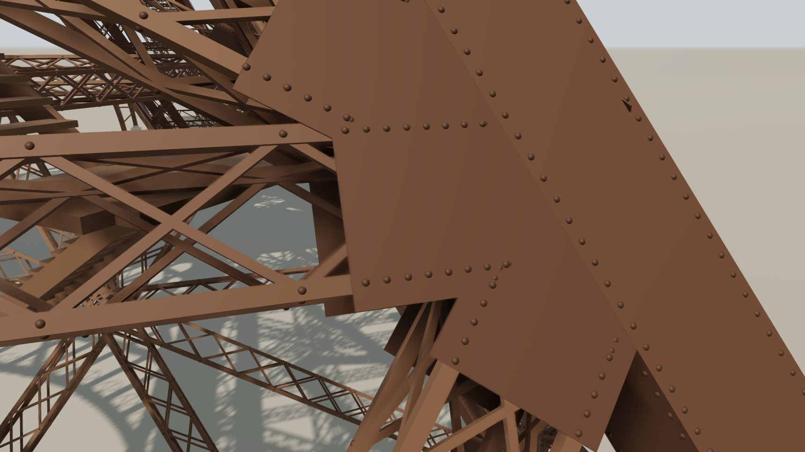
Each rule ends in a spawnInstances node that emits a batch of transforms against
the asset id "rivet". The batch carries the true size in its matrices, so a host
resolves it against a unit head: a spherical cap of base radius 1 and rise 0.7, 80 triangles.
This page does not draw the matrices. It packs each head into 24 bytes (its seat, a rotation, a
width and a rise), folds the drive in, and rebuilds the head in the vertex shader
(rivetPack.ts, 13532b4c). ?cpuRivets restores the matrix
path.
Rivets receive shadows but do not cast them. A 4096² map over the whole tower gets about 9 to 10 cm a texel on its longer side under this light, so a head 13 mm high throws nothing it could resolve, and casting would put every instance into the shadow pass.
Before the first rivet commit landed, an independent check found rivets up to 19 cm inside a
plate. A size table stepped 1 cm past a node, and the skin read that as an 11 m taper; the commit
fixed it. After the first audit round, every rivet the three rules then placed sat within 0.04 mm
of its steel. The later rules record their own residuals in their commits; the splices' are above.
One known residual at full depth, first-floor heads crowding the rows as built, is pinned by
tests/eiffelRivetCount.test.ts.
Nothing exactly coplanar. The tower is drawn from one set of dimensions, so
its parts meet EXACTLY: a member's end face on the horizontal it lands on, a rivet's rim on the
plate it fastens. Coplanar is the one thing a depth buffer cannot resolve. The page's buffer is
logarithmic, so its resolution is set by far alone. The depth written is
log2(1 + w) / log2(1 + far)
and one step of a 24-bit buffer is 0.27 mm at the 608 m the page opens on. Faces that meet exactly flickered against each other as the camera turned.
So at the end, everything the graph outputs except the chains, the flag and the erection's works is moved off its plane by up to 1 mm per axis: every mesh class, the lift parts, the fittings and the rivet batches. A ruler laid on the built model therefore reads neither the residuals above nor the exact dimensions. The offset is keyed on point identity rather than on an array slot, so it is a property of the built tower and not of a cook order.
It was measured at the laced depth when it went in (1c11fcd5). Of the 13,716 gusset points that then lay exactly in an upright's face plane, none still did, and about three quarters cleared a depth step at the opening pose. The cost is that two coincident points carrying different seeds part company. That opens cracks of about a millimetre where one member lands on another: a fifth of a pixel here, a pixel in the closest figure on this page, and visible only if the camera is driven to its 0.2 m limit.
Library
One leg is built, and copied to four quadrants with its directions turned.
Every leg member is built once, in the +x+z quadrant, and copied onto four targets rotated 0, 90, 180 and 270° about the vertical. The entretoises are the exception: they are built twice, as the Roux and Otis variants, and each is copied onto two legs.
copyToPoints composed each copy's position and rotation, but every other column
rode along unturned. Copied as-is, three of the four legs would carry a faceN
pointing the source quadrant's way, and a box copied onto a turned target would be lit as if it
had not turned. From its second commit the demo corrected faceN after the quadrant
copy, with a chain of three nodes and a quaternion written in the field grammar. That was recorded
as a gap in the library, and fixed there.
rotateAttrs, every copy keeps the source's faceN (0, −0.449, −0.893): its horizontal part then runs along the face on the 90° and 270° copies and is reversed on the 180° copy. With rotateAttrs: ["faceN"] it turns with its copy. The plan is to scale, with leg outlines at XXVIII and XXVII; arrow lengths, and the turn and scale in the box panel, are illustrative.copyToPoints now takes rotateAttrs: a list of f32 tuple-3 columns
turned by each copy's target rotation, on the point, vertex and primitive domains. It applies the
rotation and, under mirrorAware (on by default), the signs of the target's scale, so
a mirrored copy's normals stay outward and its faces' winding is reversed. It never applies the
scale's magnitude. No eiffel target is mirrored, so for the tower it is rotation only.
It refuses P, rot, scale, seed and the
bounds by name, with a message listing the valid columns. The default is an empty list and
byte-identical to the old behaviour, so the corpus golden file did not move. The demo switched
over in two steps:
- The leg members (12f0ec8): no output count changed. The turned normals agreed with the workaround to one f32 ulp, and positions moved by at most 7.6 µm.
- The box normals (09c2f9a): 17.18 million position values stayed bit-identical, with normals within 2.1 × 10⁻⁷.
Library
Where the tower needed a node the library lacked, the node went into the library.
rotateAttrs set the pattern: a workaround in the demo is recorded as a gap in
PCG-TS and closed there, and the demo then drops the workaround. The tower has driven several
more. Each is a general node or mode, documented in the node reference; none is specific to the
tower.
| Library change | What it does | Where the tower uses it |
|---|---|---|
| pointList | A literal, serializable point table: rows of points with their attribute columns (733754fd) | Every point table the TypeScript computes enters as one, through pointTable (6e77795e): 289 to 345 of them per depth |
| ramp, on a stop | An input exactly on an interior stop returns that stop's own value, on the CPU and in the GPU compiler's ramp alike (fd41338d) | Every indexTable column; found by the point-list change's byte-identity test |
| polygonBoolean | Planar union, intersection and difference of outlines with holes (caec7ce3) | A floor deck less its wells (platforms.ts, 0ad6c362); the summit's slabs with their wells (summit.ts, c0255f8e) |
| extrudePolygon caps | Holed and concave outlines capped by ear clipping, holes marked by holeOf (caec7ce3) | Extrudes what polygonBoolean returns |
| sweepProfile | rect and polygon sections (6d7094ec); end caps retriangulated as corner fans (caec7ce3) | Flat bars and the arches' ironwork are rect sweeps (strut.ts, ironwork.ts; 6f9da5b5) |
| pathResample fit, align | fit: exact | ceil | round | floor and align: start | center for spacing mode (6d7094ec) | align: "center" centres the uprights' seam rows on their stretches (builtup.ts); fit: "round" sets the panels of the shaft's plan-girder webs (shaft.ts; 3cad47c9) |
| meshPrimitive normals | Opt-in normals: true (6d7094ec) | Gusset plates and the lift boxes (6f9da5b5, c51c5777); the page's zero-normal repair was deleted (3aa4f14d) |
| filterPrimitivesByBounds | vertex: "boundingBox", a whole-primitive bounds test (6d7094ec) | A streamed region's seam gate (region.ts, c51c5777) |
| smoothNormals | Shades a faceted curve round and keeps an edge sharp (8103b857) | Round parts such as the reservoir and the crescents (chord.ts, 9cb09d6e) |
| copyToPoints mirrorAware | A mirrored target keeps normals outward and reverses winding (caec7ce3) | Nothing: no eiffel target is mirrored, so no output moved |
The same piece of work added four nodes the tower does not use: pathClip,
segmentCrossings, bridgePaths and splitPolygons, along
with transferByIndex's outNames. They came out of what the demo's
TypeScript was doing — finding where bars cross, cutting a path, bridging two — and each has a
teaching graph in the corpus (basics-clip-a-path,
basics-where-bars-cross, basics-bridge-two-paths,
basics-split-a-window). No eiffel graph uses them: the tower still finds its
crossings in crossing.ts. One library trap is still open: mergePrimitives
fills a column missing on one input with zeros, which a lit material shades black.
Regions
Under each upright: a support, a massif, and on the river side a caisson.
The ground module (ground.ts, SOURCES.md §31) builds what the tower stands on, from
the text's pp. 85–104 and Plates II to VI. It works to one convention the plates disagree with: the
model's ground is a single plane at the tower centre's 33.50 m, y 0, while the Champ de Mars round
the piles stood higher. Everything under it is placed at its printed cote, and what the plates
carry up to the higher ground is cut off just under the model's.
The supports. Each of the sixteen uprights ends on a stack built along its own axis and square to it (6ce08cbb). From the bottom up, with the bolts that hold it down:
| Part | What it is | Source |
|---|---|---|
| stone | Two courses of Château-Landon stone, each 0.50 m thick, irregular octagons of 4.10 × 4.00 and 3.00 × 3.15 m | the thickness [sourced: the plates, and p. 87 read on its image, where the OCR prints 0,30]; the octagons [sourced, Plate IV fig. 8] |
| sabot | A cast-iron shoe, 1.800 m across its flats and 0.915 m high | [sourced, Plate VI] |
| shims | 50 mm of iron shims | [sourced] |
| contre-sabot | Cast steel; its ledge is printed 1.200 × 1.375 m and drawn 1.5% larger, so the whole of the built-up upright's end, fins included, lies on it | [estimated] |
| anchor bolts | Two an upright, 32 in all, 0.10 m across and 7.80 m long, 1.47 m apart, running 6.20 m down the axis to their anchor shoes | [sourced, p. 87, Plate VI fig. 1] |
The two 800 t jacks that set the tower moved from support to support and were not left in place [derived from pp. 102 and 117], so none is built.
One departure carries through the whole ground. The model's uprights run down to the sommiers'
centre, Plate XXXI's support node, where the iron really ended 1.10 m higher up the axis (Plate VI
fig. 8's chain, 200 + 715 + 50 + 125 + 10 mm). The stack is therefore built under the model's
upright, and the supports and the massifs under them stand 1.10 m down the axis from their printed
cotes [derived] (SUPPORT.stack).
The foundations. Sixteen massifs, one under each upright's stones, are truncated pyramids of rubble in cement on the tower's diagonal: a vertical front, a top square to the upright, a rear face parallel to the leg [sourced, pp. 86–93, Plates III and IV; the lengths derived from the printed profile]. Piles 2 and 3 stand on 10 × 6 m concrete footings on the gravel [sourced, p. 86].
Piles 1 and 4, on the Seine side, stand on eight compressed-air caissons, one under each massif. Each is 15.24 × 6.00 m (the first one sunk, pile 4's N° 1, 14.24 m long) with rounded corners, filled solid with concrete in its iron shell [sourced, pp. 88–93, Plates II and IV]. The corner radius, 1.0 m, is derived from the printed area, « 90,60 m q ».
Between them stand the walls of piles 1, 2 and 4, as the 18 piers of a printed run whose arches spring above the model's ground [sourced run; which end it starts from estimated]. Under piles 2 and 3 are two cast-iron earthing pipes each, 0.30 m across and 18.00 m long [sourced, p. 86, Plate II; their depth derived] (c3ae6979). Not built: the caissons' shafts and airlocks, and the lift massif's pit and cage; that massif takes the same rule as the other three [estimated].
All of it is under the ground plane. The page's section view opens it on the plane Plate XX's diagonal section is drawn on, x + z = 0, keeping pile 4's half and taking away the ground over pile 2's [the plane sourced; keeping pile 4 rather than pile 2 the model's choice] (see Rendering).
The machine room under pile 3 has its floor at 30.50, y −3.00 [sourced, p. 88 and Plate III fig. 4] (18827652). It holds the boilers, the pump-engines and the coal store, as massing where Plate III fig. 4 draws them at 1:200 [measured: positions read at 1:200, ±0.3–0.5 m; unprinted sizes estimated], and the Otis lift's motor girders run through it. A vaulted flue, 1.30 × 1.70 m, runs « 116m23 » to the chimney [sourced, Plate IV fig. 15]. The chimney, 17.23 m over its footing [sourced], is still modelled, as a solid the clearance checks read, but no longer drawn.
The plinths (b78ce979) are Plate V's:
- a gorge traced in 11 tiers on fig. 17 [measured, scaled to the model's height];
- the inner corner swept on an arc of 3.29 m, with a bench along it, its sill 0.70 × 0.10 and its seat 0.48 m [the arc measured on fig. 12; the bench's existence p. 95; its sill and seat sourced, fig. 19];
- rusticated courses of blocks 1.53 × 0.50 m, staggered, 88 to a plinth [measured, fig. 15];
- a door 2.58 m wide on each inner face [sourced, fig. 16].
The open point is the height. Plate V puts the plinth's foot on the piles' floor, 1.58 m above the model's ground. The model keeps its plinth on its flat ground, so it stands 1.58 m low. Raising it means raising the ground round the piles and moving the arch's piers with it, and SOURCES.md §31.2 leaves that for a decision.
The piles are numbered as on the plates: 1 Nord, 2 Est, 3 Sud, 4 Ouest, clockwise
from above; pile 4 is the +x+z leg the model builds and copies. The supports and massifs are copied in
the graph onto the same quadrant targets as the legs. Tests: eiffelSupports,
eiffelFoundations, eiffelPlinths, eiffelGround.
Regions
The first floor and the summit: the arch is solved, the rooms are read off their figures.
The first floor is built on one face, in two planes, and copied to the four faces. The two planes are the face plane and a plane 15.00 m inboard, at the legs' inner uprights. Its arch is two concentric circles, radii 36.4064 and 40.32373 m, turning to a lower arc of 44.5258 m where it meets the upright. There are 14 montants per half, at a 4.011° pitch, and each of the arcade's heads is the incircle of three lines, solved by Cramer's rule. If the montants and the upright disagree, the builder throws, naming the montant and the plate's rule.
firstFloor.ts, spec.ts (Plates VII, XI).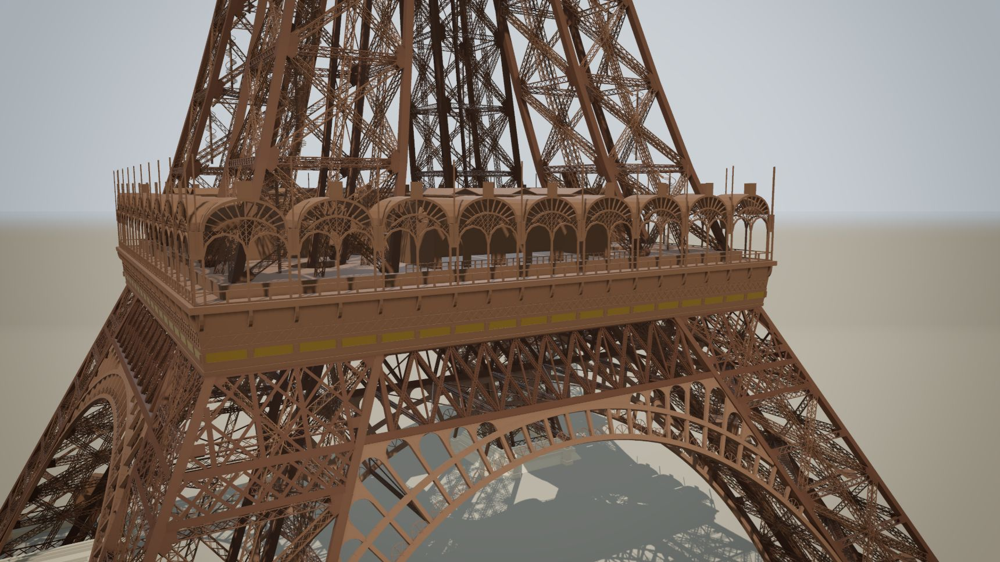
The arch lands on the uprights as they were built. The first floor's landing ends meet b's web, and its members land on the webs of b, d and a, never on the tip of a fin, as Plate XI figs. 3, 5 and 11 draw them on b's (0d114215).
Ironwork
The arch's ironwork is Plate XI fig. 14's decorated panel (d40142a9). Each panel has a round-headed frame « Ame 160×7 », three bars « Corn 100×45 », four cast volutes « Volute en fonte 80×45 » and macarons [sourced, Plate XI fig. 14 and p. 80], 125 mm across [measured on its 1:10 detail].
The text puts the motif on the arch's inner and outer faces and leaves the other two plain. On every tower face the model dresses the decorated side of both arches, the one in the face plane and the one 15 m inboard: 26 panels each, 208 in all. It keeps a volute only where half its width clears every panel edge and the frame and bars [rule], which leaves 752. The frame and the bars are built at every depth, the volutes and macarons from the laced depth up.
The 1889 dressing
The first floor is dressed as in 1889 (cdf757b9, ff08b7bc; SOURCES.md §10). One rule builds the four pavilions: cornice, posts, balustrade, pinnacles, timber screens. Each face then takes its own dressing from Plates XXIX and XXX: the Russe on the north-east face, the Français south-east, the Anglo-Américain south-west and the Flamand north-west. The Français and the Russe have entrance flights at their fronts as Plate XVIII draws them; the Bar Anglo-Américain and the Flamand have none [sourced; the Flamand read from the plate's Théâtre, estimated].
The gallery has 36 arcades [sourced: nine a face, and the ledger's « 36 arcades »]. Each is dressed once and placed on all 36: a stamped-zinc crest measured on Plate XIX fig. 1, and yellow glass cabochons in the crescent's twelve cells [the cabochons sourced, text; twelve counted on the figure], 432 in all [derived]. The balustrade has 720 balusters, the number the ledger records set (p. 217), not the 560 that p. 213 gives. The inner arcade is Plate XIII's; the gas globes' placing is assumed.
Glass is its own class (3b5a9668): the pavilions' doors, screens and tympana, and the summit's
croisées. The arcade's crescents are « verres coulés étamés », silvered glass, and have a class of
their own, silvered. The second floor is built in its 1889 state from Plate XIX fig.
7, its unprinted heights assumed.
The summit
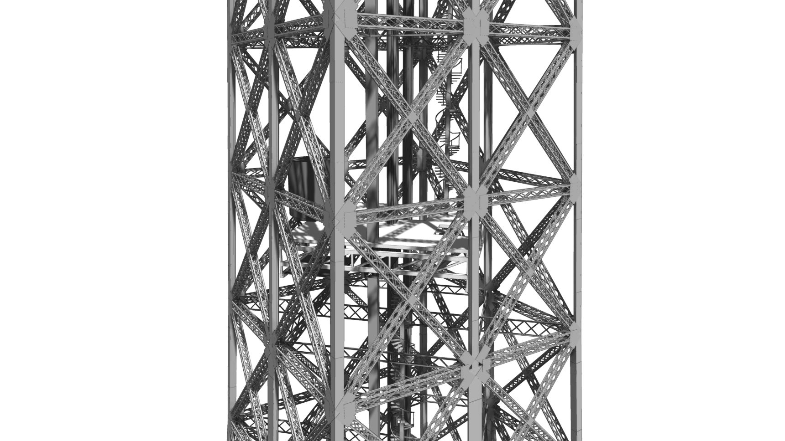
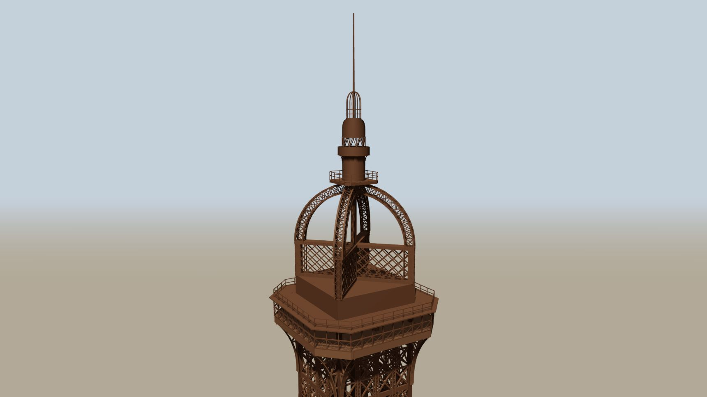
The summit was read wrong twice. Face-on, the structure above the third floor shows two 0.80 m columns at its corners, and two readings took them for a box. The third audit's blind reader established that they are two diagonal lattice girders, 14.870 m by 1.130 m, crossing over the axis: the north-south one continuous, the east-west one butting against its webs. Above them stand a dome of four half-arches, the lantern and the rod to 312.275 m. A plate of « 2 Goussets 1.130 × 10 » covers the girders' crossing (see Joints).
The top is built room by room (44c1d6cd; SOURCES.md §29):
- The glazed gallery, with its 24 croisées [sourced, the cost table].
- Eiffel's pavilion, 10.50 m square, with the rooms Plate XIX fig. 6 draws [sourced; the two unnamed laboratories read as electricity and meteorology, assumed].
- Four contrefiches, 600 × 762 mm [sourced, Plate VII fig. 4].
- The lantern, a decagon of 0.80 m sides [sourced, p. 79], its posts bearing on the cupola as built (26b76dc4).
- The rod, the lightning conductor that carried the flag, 10.790 m long [sourced, Plates XV and XIX], with its tip at 312.275 [sourced, Plates VII and I].
The top's slabs are outlines with their wells cut out in the graph, and the last ladder bears on its manhole (c0255f8e). On the rod flies the tricolour at Plate XIX fig. 4's 5.50 × 3.00 m. The text gives 7.50 × 4.50; the model carries both and uses the plate's (b6fbc49d). The graph builds the flag flat, and the page flies it (see Rendering).
Regions
The 72 names are lettered, letter by letter, as real geometry.
Seventy-two names of French scientists and engineers run round the first floor's skirt, 18 a
face, on a band 0.80 m high [sourced, Plate XIX fig. 1], 4.02 to 4.82 m below the gallery floor
[the top measured]. Which names are on which face comes from Plate XIX's headers and from Barral's
1892 account. Their order left to right is observed on photographs, because Plate XIX's elevation
shows only the south-east face (savants.ts; 411724c2). They are spelled as cast,
without accents, as the photographs show them, and the list's « Couchy » is corrected to CAUCHY.
The plaques are painted iron with the skirt; only the letters are gilt.
The letters are geometry, not a texture or a font. letters.ts draws 27 glyphs, A
to Z and the hyphen of GAY-LUSSAC, each from stem, bar and ring pieces [rule]. Their stroke
weights are fitted to a photograph, and their proportions are the module's own estimates
[estimated]. No 1889 photograph is sharp enough to read the letterform, so the forms follow the
1986–87 restoration [observed]. The cap height is about 0.60 m, from Barral (p. 19, a secondary
source) and a measure on a photograph; Eiffel's book gives none.
The layout is computed in TypeScript. In the graph, the glyphs' pieces enter as one
pointList of outlines, become closed paths, are extruded together by one
extrudePolygon, and are copied by copyToPoints onto 491 places: 490
letters and one hyphen.
Regions
1,710 steps from the ground to the summit, counted against the book.
Eiffel's 1900 book prints Hénocque's count of the stairs: 1,710 steps, in five runs of 347,
327, 456, 455 and 125 [sourced, p. 304]. The model builds all five (stairs.ts,
9e20c20a; SOURCES.md §11), each from what the plates and the text give for it and a rule where
they stop:
| Run | From, to | What it is | Book | Treads placed |
|---|---|---|---|---|
| ground | Ground to the first floor | Straight flights with landings, up in pile 2 and down in pile 4 [sourced, Plate XX's Nota, p. 81]; each panel of the leg one repeat of Plate XXVIII fig. 5, flights of 24 and 21 risers, of 0.15933 m but for a 0.172 and two 0.1498, between three landings, 276 running risers in all [sourced]; 1.00 m wide [sourced, Plate XX's Nota] | 347 | 332 × 2 |
| e1 | First to second floor | Four helical stairs 1.60 m across, one a pile [sourced, Plate XX]; each built as five helices of 56, 51, 50, 46 and 61 risers [rule] joined by flights of 11 risers, 0.207 on 0.255 treads [sourced, text p. 81], and a last flight of 19 | 327 | 326 × 4 |
| e2 | Second floor to the intermediate landing | A service helix of 435 risers [rule] and flights of 16 and 5 [sourced, Plate XX fig. 2] | 456 | 454 |
| e3 | The intermediate landing to the third floor | « 314 marches sur 54m88 » and a connecting flight of 13 [sourced], an upper helix of 128 [rule] | 455 | 455 |
| summit | The third floor to the top | A small spiral to Eiffel's apartment, three steep flights, the campanile's spiral of « 22 marches de 178 » [sourced, Plate XV fig. 2], and three ladders | 125 | 121 |
Treads placed: 2,998 at every depth, from 1,688 built; the ground run is copied
onto its two piles and e1 onto all four. A run places fewer treads than the book counts steps
where a slab or a landing takes a tread's place. Counted from stairRuns() at
109f23f9, 2026-10-02.
Two numbers depart from a source, and are recorded as such. The plates give the ground run 351
steps against the book's 347; the model keeps 347, an open decision in stairs.ts. The
e1 helices are printed at 0.178 m risers, and the model runs them at 0.1710 to 0.1745, 0.1728 on
average, to land on its floors. Not built: e2's foot of « 11 marches », and the ground stair's
arrival turns. Separately, e1's last flight clashes with the Otis car, a bounded exemption recorded in
SOURCES.md.
The stairs are drawn for eye level as well as for a distance (bdf4a963): landings as sectors,
headroom over the turns, the core's door, the manhole at the top. Tests hold the clearance and the
headroom (eiffelStairsClearance, eiffelStairsHeadroom). Treads run into
their newels, posts reach their rails, and newels and stringers stand on floors (023d40f8; see
Nothing on air). The geometry is TypeScript producing boxes and lines.
lifts.ts turns them into graph nodes (meshPrimitive,
copyToPoints, the quadrant copy, and pointsToPath for the rails), and
the page's walk, ?walk, climbs all 1,710 steps on the stairs' own
lines.
Regions
Three makers' lifts: the graph builds the parts the page moves, the page runs the clock.
The cars. The 1889 tower had lifts by three makers, and the model builds all
six cars (lifts.ts; SOURCES.md §11, §34). Their routes are as the plates and the text give them [sourced, Plates XX and
XXI and the text], and the cars are the book's:
| Maker | Where | Route | Car |
|---|---|---|---|
| Otis | Piles 1 and 3 | Ground to the second floor | Double-deck, for 50 people |
| Roux, Combaluzier et Lepape | Piles 2 and 4 | Ground to the first floor | Double-deck, for 100; its dimensions measured on a figure, not printed |
| Edoux | On the axis; a vertical lift | Second floor to third, in two stages of 80.20 m through the intermediate landing at 195.93 m | For 65, at 3.570 × 3.900 m [sourced, Plate XXIII ter fig. 20] |
The leg cars are cabins, with frames, doors, glass and benches (61d4df05).
The tracks. The inclined tracks follow the legs' curve, because each rail station is anchored to the inner corner a at every Plate XXXI node; a track kinks where its leg kinks. The Otis track follows the pile's diagonal from 54° 35′ at the bottom to 77° 30′ at the top [sourced, text pp. 144, 344]. The model's rail is a polyline that holds 54.6° to node XXIV, steepens to 77.05° in panel 10 and runs at 74.11° in panel 11. The Roux track's top angle, about 72°, follows from its printed length alone [derived]. The tracks run on below the ground into their pits.
The third audit round found tracks passing through solid decks (90 intersecting triangle pairs); the decks now have their openings from Plate XVI.
What balances what. Each maker solved the counterweight differently, and the model builds each mechanism as drawn.
- Edoux. The lower car is the counterweight of the upper, hung on four cables over pulleys at the top [sourced], so the two cars move in opposition [derived]. Its piston, 0.32 m across and 80.96 m long, is derived; the 80.20 m stroke and an 81.06 m cylinder are printed (the cylinder in the text, p. 172).
- Otis. Water drives a piston in a cylinder 1.065 m across and 12.674 m long, reeved through a twelve-fold tackle, « palan à 12 brins », so its carriage travels a twelfth of the car's run. The counterweight truck travels a third, 129.96 / 3 = 43.32 m, on its own track [sourced, Plate XXI].
- Roux. The car is pushed up by an articulated chain of mostly one-metre pieces round a 3.864 m driving wheel. It is balanced by lead counterweight pistons of about 143 kg: eleven in the text, ten in its fig. 144 [sourced].
The machinery hangs on steel that carries it: shafts in bearings, hangers, wheels (17c1647e).
Graph and page. The graph builds the geometry, and each part the page moves is
its own output: 43 car.* meshes (cars, cabin glass, cables, pulleys, wheels, pistons,
carriages, trucks) and the Roux chains as four chain.* outputs of instances. The cars
are placed per leg, not copied, because each is its own mesh the page moves on its own.
lifts.ts also publishes each car's motion law; the page owns the clock and moves the
parts every frame.
By default all six run station to station at about 1 m/s, a speed chosen for the page; the real Roux car took about a minute to the first floor. The Otis car tips as its rail bends. ?still parks them where the graph built them, each leg's car at a different height.
Departures, each recorded in SOURCES.md: the rail stands 4.35 m off its corner where 3.3 is measured off Plate XX; the Roux car arrives at the first floor tipped 11.7°, where the book has it level; the Otis car tips 8.6° against about 11.9°; the Otis pulleys are drawn flat, and its counterweight track runs about 58 m against the text's 45. Not built: the Roux cylinders and Galle chains, the Otis « garant » cables, the Edoux racks and pipes.
Regions
The erection, 1887–89: every piece dated, the temporary works and cranes built.
?build opens a different graph: the tower's modules plus the
erection's temporary works and cranes (erection.ts, cranes.ts,
chronology.ts; SOURCES.md §32; f15598c0). The graph carries no time. At load the
page dates every triangle, then reveals the tower day by day under a date scrubber with a play
button. The span runs from the foundations begun on 26 January 1887 [sourced, p. 86] to the last lift into service
on 19 June 1889 [sourced, p. 118]: about 29 months, in about 40 s of play.
The pace is mainly the book's. Its milestones, all but the first two from its table of the erection's periods, are these:
| Date | Milestone | Source |
|---|---|---|
| 1 July 1887 | the iron begun | [sourced, p. 102] |
| 10 October 1887 | 28 m reached | [sourced, p. 103] |
| 4 December 1887 | the four first panels | [sourced, pp. 112–113] |
| 18 December 1887 – 1 March 1888 | the girders | [sourced, pp. 112–113] |
| 31 March 1889 | the arrival at the top, and the flag hoisted the same day | [sourced, pp. 112–113; p. 311] |
| 1 June 1889 | the end of riveting | [sourced, pp. 112–113] |
A few dates are estimated or read off photographs: the scaffolds struck, the legs reaching the first floor. The cranes' days are estimated. 18 July 1887 is the book's date for a photograph of pile 4's first tronçons, not the day they were begun: they are already past mid-panel 1 in it [sourced, p. 103].
Between milestones, rules take over:
- An erection front of height against date, shared by all four legs [rule]. Its stops are read off the book's fig. 123 and photographs [sourced stops], and it is interpolated linearly between them [estimated].
- Each piece is dated by the height of its top, and an upright by its tronçon [rule].
- The girders' order is assumed.
- Site rivets appear at the book's counts for each period [sourced counts; the mapping a rule].
Temporary works are Plate XXV's (6670c21f):
- four timber pylons a leg, on bases 8.50 m across, 27.41 m tall on the figures where the text says 27.40 [sourced, Plate XXV figs. 1–3, 13–14, pp. 103–104];
- the sand boxes, 0.40 × 0.50 m, and temporary shoes [sourced, Plate XXV figs. 3–12];
- four scaffolds « de 41 m de hauteur » [sourced, pp. 107–108, Plate XXV figs. 15–18], their plan positions measured off fig. 1.
When each went up and came down is mostly assumed.
Cranes are creeper cranes of Plate XXIV's design, rated at 3,000 kg
[sourced, text p. 105; the geometry Plate XXIV figs. 2–4] (c3a0ba32). They work in six runs,
never all at once: four leg cranes on the lift girders, and two upper cranes on the central
guide post. How far a crane steps each time is a rule of the model's [assumed]. The works are the
graph's ten works.* outputs, built only under ?build, and
the page moves the cranes.
Not built: the hydraulic jacks, the shear legs, the steam hoists, the working floors and the piles. Known departures: the cranes intersect panels 12–13, and the post cranes' jibs cross panel 29's uprights and bracing, the stair's flights and the summit's rooms. Build, rotate and walk are exclusive, and turning build on reopens the page on the whole site.
The host page
The page draws what the graph settled, under a sun fitted to it.
Cook and draw
At a whole depth the page cooks the graph once on the CPU; a streamed depth is cooked by cells (see Detail). The page converts each class output to a buffer geometry, packs each rivet batch for the vertex shader (see Rivets), and instances the fittings and the chains against its unit assets. The depth buffer is logarithmic, because the camera may orbit to within 0.2 m of a rivet head and draw back to 1.5 km for the whole tower.
The page draws the result as an ink-and-wash elevation (ink.ts,
wash.ts, drawing.ts; 5017ed2c). A prepass draws every visible
surface's normal and depth. A full-screen pass then inks a contour where the depth jumps and a
crease where the normal turns. Under the lines lies a wash: the scene lit by the page's lights and
shadow, with every material's paint replaced by a palette generated from one main colour.
Nothing shines. By default the palette is mono, so the tower is one grey in steps of value on
white paper.
The palette
Each class still has its own material, and what a class is to the palette is its role:
| Class | Drawn as |
|---|---|
| the iron classes | the steps of value their materials hold against one another, so the classes stay apart only enough to tell them apart up close |
| the masonry and the foundations | stone |
platforms, the floors and their fit-out | the paper's lightness, by default |
deckUndersides, the 1st and 2nd floors' bottom faces | a role of its own: a dark grey, lightness 0.4 by default, so a floor seen from under the tower reads as the mass it is, not as the paper (53f551f0) |
| the names' letters | brighter than the paper: a light band on the skirt |
| the erection's timber, the temporary works | a role of its own, drawn pale: lightness 0.97 by default, so the scaffolding reads as something the iron was put up inside, not as part of it (71419e98) |
glass | a pale grey at an opacity of 0.55; it takes no line and casts no shadow |
| shop rivets, site rivets | a material each |
Light and shadow
A braced panel under flat light is a hatched silhouette. Lit from one side by a directional sun, it casts its web onto the members behind it and onto the ground, and the depth of the lattice becomes legible. The wash keeps that light under the lines.
The lights are the page's rig (rig.ts), set by the drawing
(drawingLook in drawing.ts; f94841e9):
| Light | Setting | By default |
|---|---|---|
| key | white, 57° up at an azimuth of −15°; the one light that casts a shadow | on |
| against the key | straight against it at a quarter of its strength, shadowless; it lights from the other side what the sun leaves in shade | on |
| hemisphere ambient | white, at 0.15 of the paint | on |
| ambient occlusion | — | on |
| from under the tower | shining straight up, shadowless | off |
| square to the sun | level and square to the sun, shadowless | off |
The drawing has no sky, no fog and no vignette, and it draws no ground. A plane catches the tower's shadow on the ground, and the page lays it on the paper in a light grey.
The key's orthographic shadow camera is fitted by fitShadow to the bounds of what
is drawn, the buried foundations left out; the figure below shows the fit. The shadow map is
4096². It is not redrawn as the camera orbits, so orbiting costs no shadow pass. It is redrawn
when the visible classes change, when the section moves, at each day of the erection, when a
streamed cell arrives, and on the walk's near-shadow refits.
That scheme holds because nothing that moves every frame casts a shadow: not the lift cars and their machinery, and not the flag. The rivets cast none either, for cost (see Rivets). The erection's cranes move only from day to day, so they do cast shadows.
fitShadow applied to the box the page fits after the cook. The figure is drawn for the key of the lit look the drawing replaced (look.ts): 49° up at an azimuth of −42°, which throws 0.869 m of shadow per metre of height, about 271.5 m from the rod's tip [computed from the angle]. The box holds every drawn class but the foundations, from below the ground, where the lift tracks end in their pits, to 312.278 at the rod's tip. Each corner's ground hit is added so the thrown shadow falls inside the depth range. A ground hit lies on its corner's ray along the light's direction, the light's z axis, so it keeps its corner's light-space x and y and moves only far. The box gains a margin of 2% of its diagonal on every side, and a ground hit's reach is capped at 1.5 diagonals. Elevation and plan are each to scale, at different scales.The drawing's own key, 57° up, throws 0.649 m of shadow per metre, about 202.8 m
from the rod's tip [computed from the angle]. Under the lit look's light, a texel of the 4096² map
is about 9 to 10 cm on its longer side, as walkView.ts records it.
Normals
The page repairs no geometry. meshPrimitive writes no normals by default, and
mergePrimitives fills a column missing on one input with its default, (0, 0, 0),
which a lit material shades black. Several modules fell into this. They were fixed at source:
meshPrimitive gained an opt-in normals: true, and the page's
zero-normal repair was deleted (3aa4f14d). The mergePrimitives half of the trap is
still open in the library's backlog. Round parts, the reservoir and the crescents, shade round
through smoothNormals (9cb09d6e).
Motion and controls
The page also runs things in time, without recooking the graph. The lift cars and their
machinery move every frame by the motion laws lifts.ts publishes (see
Lifts). The flag is a simulated cloth: wool bunting on its cord in a gusting
wind drawn from the seed 1889, solved in small XPBD steps (flag.ts, ceeb65f6). It is
defined as a run from rest in fixed 1/60 s steps, so the frame at a time t is the same bytes
however the page reached it. ?wave swaps it for the earlier wave, and
?still parks the cars and holds the wind.
The page's controls:
- Section. The section box cuts the whole tower on a vertical plane parallel to Plate XX's diagonal section, and opens the ground under the cut (see Ground). A slider moves it in metre steps (?section=<m>; fcd79a0e).
- Walk. ?walk climbs the 1,710 steps in first person on the stairs' own path (4dc794b2).
- Orbit. WASD and Q/E move the orbiting camera.
- Highlights. The highlight switches (?hl=) draw the stairs, the lift cars or the rivets over the rest of the tower, which is laid on the paper at the Ghost slider's opacity.
- Copy view. "Copy view" copies a URL that reopens the exact frame, with its state as JSON.
The host page
Lacing and rivets can be cooked a cube at a time, round the camera.
The page's Detail section sets lacing and rivets each to off, streamed or
full, and applies the choice with a reload (depth.ts; b7ce7138). Full is a
depth's graph cooked once, as in the table in Architecture. In the
URL, Full is whole. It is not ?rivets=full,
which is whole rivets plus the built-up uprights' rows (see Commands).
Streamed is the one place the demo uses the library's runtime: grid levels and partitioned
cooking (bands.ts, 866fd282). The page still cooks the whole tower, at the depth
that is set full. Above it stands a World of up to two levels of cube cells:
| Level | Cell side | Cooked when its centre is within | A pixel wide at |
|---|---|---|---|
| laced | 32 m | 120 m of the camera | a 45 mm lacing bar at 63 m |
| rivets | 16 m | 40 m of the camera | a 19 mm head at 27 m |
Those defaults come from what a pixel holds on the page's camera at 1,080 rows [derived]. When
both levels stream, a rivet cell cooks only once the laced cell holding it has, so heads never
stand on a solid bar. A level's cellFilter skips the cubes that are only sky.
Each level cooks one regional graph (region.ts): the whole tower's graph
at that depth, node for node and seed for seed, plus box filters, the gates, that each cell moves onto
its own bounds, each widened by its halo. The regional graph has 2,251 nodes laced and 3,926 with rivets.
A laced cell puts out the classes the laced depth changes. Each comes out as the primitives
whose bounding box meets the cell, so a member crossing a seam comes out of both cells whole, and
the page clips it at the seam. The gate is one filterPrimitivesByBounds (c51c5777).
A rivet cell puts out every head whose seat is in it, so each head is in exactly one cell. A cell
is therefore exactly the whole cook inside it, and tests/eiffelBands.test.ts holds
every cell of both levels to that, byte for byte.
The cooking runs in one Web Worker (bandsWorker.ts), at most four cell cooks an
update in a 50 ms budget. A cook in flight is dropped when the camera moves more than the finest
streamed cell: a rivet cell, or a laced one when only the lacing streams.
| Cell | Cold | Warm |
|---|---|---|
| laced, 32 m, a heavy first-floor cell | 873 ms | about 334 ms |
| laced, 32 m, a cell of leg alone | — | 47 ms |
| rivets, 16 m | 499 ms | about 91 ms |
Measured 2026-10-02, headless in Node rather than in the page's worker, on the same Intel i9-13900KF as the table in Architecture; medians of seven (109f23f9). Cold is a level's first cell, which also does the tower-wide work above the gates. That work is cached, so later cells cost their own members (warm). The whole laced cook takes 2.87 s; a streamed view pays for the cells near the camera.
Method
One agent session wrote the rules. Other agents checked them against the plates.
The demo was built in one Claude Code session, from the first request at 18:09 on 2026-09-18
to the last commit at 14:17 the next day, in 18 commits. That was the first build; about 89 later
commits have touched demos/eiffel since. The main thread launched 45 agents, and
those launched their own readers and verifiers: 107 agent transcripts in all.
The choice at the start was between tracing members and stating rules. Rules were chosen, with the plates as the first authority for anything a rule takes as input, and an [estimated] tag where no source gives a number.
git log; agent launches and the usage-limit pause from the session transcript. A green mark over a commit means its message records an independent check.Every pixel reading is calibrated on a dimension printed on the same figure. The silhouette audit deskewed the Plate I scan by 0.87° and rendered the model orthographically face-on at 4096² (9.30909 px/m). It took each row's full ink extent as the median over ±0.4 m. A row counted as off only if it was off by more than 3% under two calibrations: one isotropic, one mapped piecewise through the printed levels. Member sections were measured on the cooked meshes, sliced perpendicular to each member.
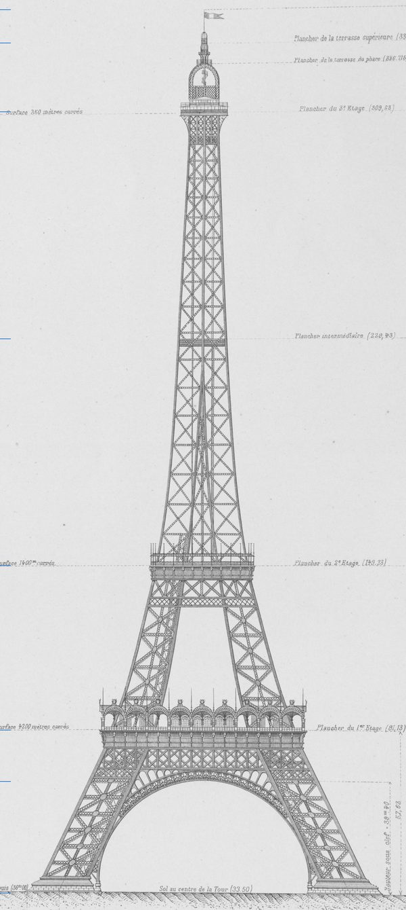
Plate I, 1900
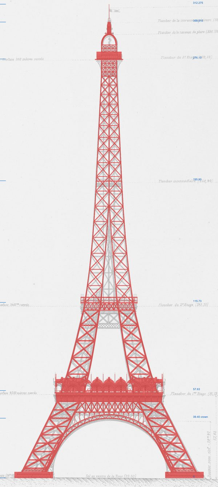
round 1 · d49c1a4
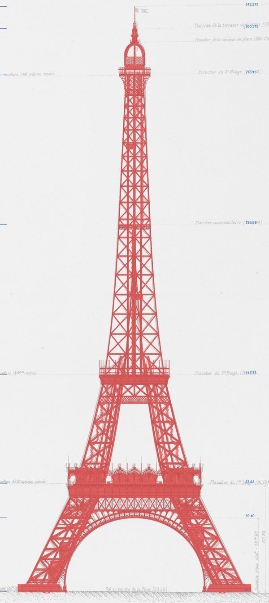
round 3 · 0fe8ba0
The auditors' own composites: model in red, drawn orthographically at the plate's scale, over Plate I in grey. Left, the plate alone; centre, the model the first round audited; right, the model the third round audited. Plate I: G. Eiffel, La Tour de trois cents mètres, Planches (1900). Source gallica.bnf.fr / BnF.
| Found by the first round | Model | Plate | Round two | Cause, and the fix |
|---|---|---|---|---|
| Window between floors | 43.7 m | 33.0 m | 33.62 m | The second floor's band was 9.4 m deep against 23.0 m. It was rebuilt from Plates VII and XIX and checked on Plate I. |
| Opening at the arch feet | 80.7 m | 74.6 m (A) | 73.48 m | The arch was one circle in the inclined face plane; it is now two concentric circles turning to R 44.5258. The plate's 74.6 is calibration A's reading; SOURCES.md §1 gives 74.2. |
| Arch band | 2.5488 m | 3.9173 m | — | The montant pitch had been read as the band depth. |
| Gusset plates | 15 mm | 8 mm | — | Plate IX's detail; PLATE = 0.008. |
| Horizontals | 0.60 m | 0.80 m | — | Plates IX and VII: the "800" horizontal runs to the second floor. |
| Summit | 24.7 m | 27.4 m | 27.7 m | The lantern ended at its terrace, about 3 m short. It was rebuilt with its finial cage, and the third-floor room re-read as a glazed octagon under a 10.68 m apartment. The summit measured 27.43 m after the fix, by 57ac013's own measure. |
Round three found the silhouette within 1–3% of Plate I from the ground to the third floor. It still found about 25 element rows off, among them the summit's plan, lift tracks through solid decks, and the pedestal and arch-foot heights. Its commit settled each on the plates (c39ee48). The pedestal, for one, now stands 5.55 m, between Plate I's 5.45–5.53 m and Plate VII's 5.65–5.74 m; the French Wikipedia's 4 m is drawn on no plate. No fourth round audited that commit.
Round three's open points are listed under "Disagreements and open points" in SOURCES.md §21–§24. The sections written since, through §34, carry their own, among them §27.4 on the rivet count and §31.2 on the plinth's height.
Method
A test asks of each piece at the plain depth what carries it.
The plate audits compare the model with the drawings. A fourth kind of check asks a question no drawing answers directly: does each piece stand on something?
tests/eiffelFloating.test.ts cooks the tower at the plain depth, with no lacing,
gussets or rivets (47dd3c91). It reads none of the tower's instanced outputs, and runs a detector
(tests/support/eiffelFloating.ts) over the faces. The detector reports two kinds of
piece:
- Floating. The cluster of faces the piece touches, within 8 mm, never reaches the ground.
- Loose. The piece is a linear solid with an end that rests on nothing. A linear solid is at least 0.3 m long and four times as long as its section. A lying or raking piece needs both ends held; a standing one (plumb within 20°) needs only its foot.
An end buried inside a closed member counts as held, decided by a vote of three rays counting crossings. Before it reads the tower, the test runs the detector on a synthetic scene and requires it to report both kinds, so a detector that has stopped seeing cannot pass.
The first sweep found 1,445 floating clusters, about 1,100 of them in the stairs, and 1,992 loose ends. The fixes went into the modules, not into the test:
- treads into their newels, and posts to their rails (023d40f8);
- the lift machinery's shafts, bearings, hangers and wheels; the same commit also closed the legs' entretoises and seated pieces of the shaft and the summit (17c1647e);
- the trellis laths, lantern roofs and knee struts and the arches' ironwork, reaching what carries them (2cf89f71);
- posts at the entrance flights' rails [estimated] (47dd3c91).
The test first measured the mesh with its 1 mm offset on, and welded corners within 4 mm. A later commit, ed3070ad, switched the offset off and tightened the weld to 0.5 mm, and the commits since measure that way.
What remains, 8 floating clusters and 386 loose ends, is in an allow list of 35 entries. Each entry has its box, its exact count and its reason, so an entry that no longer matches fails as surely as a new floating piece. One entry is an open decision rather than a known departure: the entretoise at XXI in the Otis legs.
Siblings of the same kind: eiffelRivetClash (no lacing head inside a
joint or crossing plate), eiffelStairsClearance and eiffelStairsHeadroom,
eiffelArchEnds (the first floor lands on the web).
Limits
What the model does not claim.
- Structure. The large structure is the plates' to the precision the plates print. Below the panel scale the model is a set of rules whose parameters are plate readings, often [estimated] or [measured]. Most members are where their rule puts them, not where the drawing shows that particular member.
- Rivet pitches. They are measurements of a few details, each applied by rule wherever its kind of joint recurs: the seams' 125 mm from one gusset on Plate IX, the splice fields from two of its figures.
- Rivet counts. The model draws 1,205,292 rivet heads. The only count the book prints is of site rivets: 1,050,846, of which the model draws 334,659, about a third. The 2.5 million often quoted for the whole tower is not printed there.
- Letterforms. The names' letterforms follow the 1986–87 restoration, because no 1889 photograph is sharp enough to read them.
- Later states. The 1900 album occasionally draws a post-1889 state. Where the text or an 1889 figure does not settle it, SOURCES.md says so.
Some departures are deliberate. Each is named where it occurs, and recorded beside the code that makes it or in SOURCES.md:
- The ground is one flat plane, where the Champ de Mars stood higher round the piles, so the plinths stand 1.58 m low.
- The supports and massifs sit 1.10 m down their uprights' axes, because the model's uprights run to Plate XXXI's support node.
- The lifts run at a speed chosen for the page.
- The erection's cranes pass through panels 12–13, and the post cranes' jibs through the iron and rooms above them.
The build draws two seeded values and no others: the 1 mm offset (jitterPoints)
and each rivet's headDrive (randomField). Both are hashed from two
inputs: the graph's seed, 1889, and each point's identity, which is its position and its
seed column. Outside the graph, the page's flag draws its wind from the same
number.
Nothing reads an unseeded source, so the same source cooks to the same bytes on every run.
tests/eiffel.golden.json holds the hashes, and the demo's commits use them as their
control when a refactor claims to change nothing.
Reproduce
Commands.
| npm run examples | Serve the demo at /demos/eiffel/. Depth: ?laced or ?rivets for a whole depth; =streamed or =off on either; ?rivets=full for whole rivets plus the built-up uprights' rows as built; ?bands to stream both. View: ?cam=px,py,pz,tx,ty,tz for a pose, ?fov=, ?still, ?hl=, ?site, ?section=<m>, ?walk with ?walkAt and ?walkNear, ?build[=yyyy-mm-dd], ?wave, ?cpuRivets. "Copy view" in the panel writes the URL for the current frame. |
| npx vitest run tests/eiffel | The demo's tests, one file per subject. Among them: the skeleton, which checks every upright vertex on the plate's profile, the 16/12/8 upright progression, members squared to their faces and the JSON round trip; the golden hashes; the built-up uprights, splices, rivet counts and heads; stairs, lifts, names, the ground and the erection; the streaming cells; and the floating-piece check. |
| npm run capture:guides -- --only=eiffel | Regenerate the demo renders on this page from the shot list in scripts/capture-guides.mjs; run it after a lighting or material change. The audit overlays are records and are not in the shot list. |
Next
Where to go from here
The demo is at demos/eiffel, and its graph is shown read-only in
its control panel. demos/eiffel/SOURCES.md is the research behind spec.ts, source by source.
Architecture is how the library underneath is put together, and
the corpus gallery is every graph in the repository, cooked and
shot.